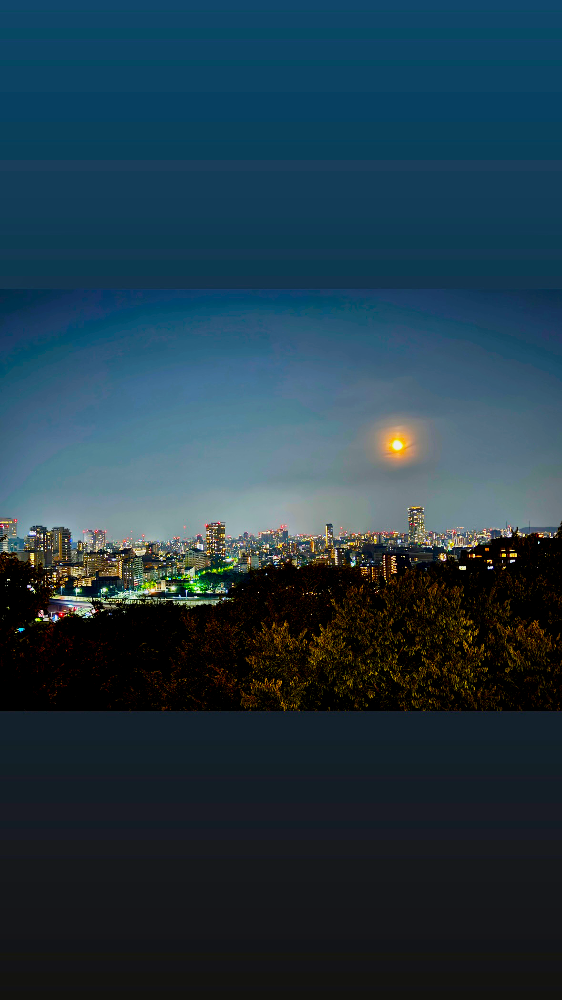
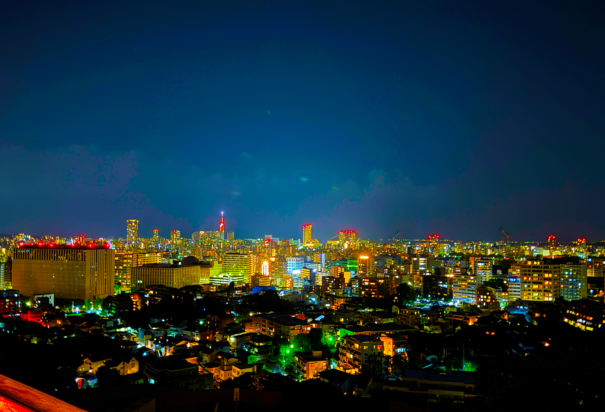

【福岡市街を一望できる「油山・片江展望台」】

福岡市城南区・早良区・南区にまたがる標高597mの油山。
その中腹にある片江展望台からは、福岡市街を中心とした約120度のパノラマを楽しむことができます。
夜になると、福岡空港や都市高速、福岡タワーなどの明かりが広がり、街全体がきらめく夜景へと変わります。
福岡の街を少し高い場所から眺めたいときに訪れたい夜景スポットです。
住所：福岡市城南区片江106-1
アクセス：西鉄バス「油山団地口」から徒歩約30分
車の場合、福岡市中心部から約30分
料金：無料
【スピリチュアルな雰囲気も満喫「愛宕神社」（西区）】

標高約60mの愛宕山山頂にある愛宕神社は、福岡市内でも人気の夜景スポットです。
境内からは福岡タワーや百道エリアの美しい夜景を眺めることができます。
福岡最古の歴史を持つ神社として知られ、厄除けや開運、縁結びなどのご利益があるとされています。
静かで落ち着いた雰囲気の中で夜景を楽しめるため、隠れたデートスポットとしてもおすすめです。
住所：福岡市西区愛宕2-7-1
アクセス：地下鉄「室見駅」から徒歩約13分
西鉄バス「愛宕下」から徒歩約8分
福岡都市高速「愛宕ランプ」から車で約3分
料金：無料
【都会の夜景を静かに楽しめる「南公園」（中央区）】

福岡市中央区に位置する南公園は、自然に囲まれた高台から福岡市街地の夜景を楽しめるスポットです。
展望台からは天神方面の街明かりや福岡タワーなどを眺めることができ、都会の夜景を身近に感じられます。
観光地としての知名度は高くありませんが、落ち着いた雰囲気の中でゆっくり景色を楽しめるのが魅力です。
夜の散歩やデートにもおすすめの、福岡市内の隠れた夜景スポットです。
住所：福岡県福岡市中央区南公園
アクセス：地下鉄七隈線「桜坂駅」から徒歩約15分
料金：無料